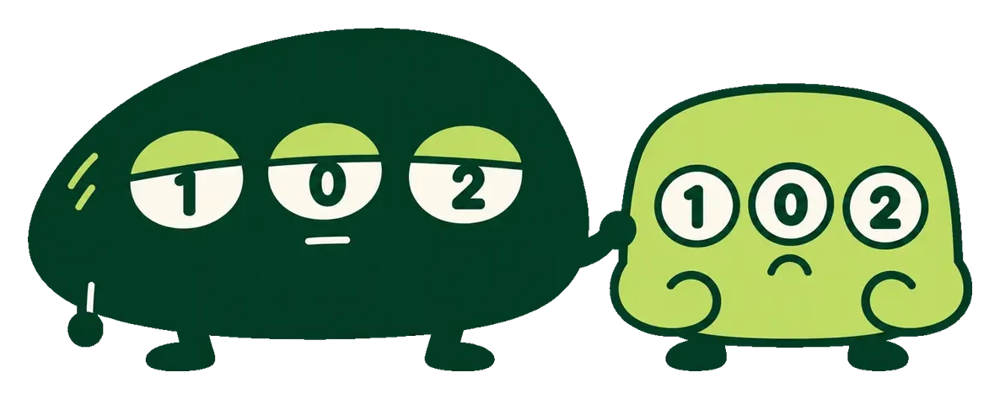

TRACK RECORD
成績は全部見せる
当たった回も外れた回も、すべて同じ基準で記録しています

公開予想
事前に公開した予想そのまま · 1回おすすめの目 的中率62%平均 8.0 / 13
本命1点の的中率38%平均 5.0 / 13
検証（バックテスト）
2025/02〜2026/09 · 46回おすすめの目 的中率73%平均 9.5 / 13
本命1点の的中率48%平均 6.2 / 13
回ごとの的中数
おすすめの目の的中数3等以上が当せん
直近36回を表示（検証46回のうち）· 3等以上の当せんは46回中3回（6.5%）
totoの傾向
2022/03〜2026/10 · 172回の公式結果（当せん金は270回）引分の数
平均3.4/13試合1%0
9%1
19%2
26%3
20%4
17%5
5%6
3%7
0%8
72%の回で引分が3つ以上。0〜1個は10%だけ
波乱（勝点差6以上で下位が勝利）の数
平均1.7/13試合22%0
28%1
23%2
16%3
6%4
6%5
0%6
22%の回は波乱ゼロ、3つ以上は27%
人気1位の目が当たった数
平均5.8/13試合2%0
3%1
10%2
30%3
24%4
18%5
8%6
3%7
2%8
0%9
投票率1位どおりになった試合数。9つ以上は5%
◆（穴目指数70以上）が当たった数
平均1.1/回29%0
38%1
24%2
7%3
2%4
0%5
71%の回で◆が1つ以上的中
1等 当せん金
中央値1,747万円39%なし
4%〜100万
7%100〜300万
11%300万〜1千万
18%1千万〜3千万
18%3千万〜1億
3%1億〜
約39%の回は1等が出ずキャリーオーバー。最高は第1613回の2.51億円
最近の回
すべての回 →| 回 | 種別 | 開催 | おすすめの目 | 本命1点 | 購入 | 等級 |
|---|---|---|---|---|---|---|
| 第1658回 | 公開予想 | 10/03 | 8/13 | 5/13 | 62通り | – |
| 第1656回 | 検証 | 09/26 | 10/13 | 7/13 | 67通り | – |
| 第1654回 | 検証 | 09/19 | 11/13 | 8/13 | 96通り | – |
| 第1653回 | 検証 | 09/12 | 9/13 | 6/13 | 88通り | – |
| 第1650回 | 検証 | 09/05 | 7/13 | 5/13 | 72通り | – |
| 第1648回 | 検証 | 08/29 | 11/13 | 8/13 | 52通り | – |
| 第1647回 | 検証 | 08/22 | 8/13 | 7/13 | 100通り | – |
| 第1645回 | 検証 | 08/15 | 11/13 | 7/13 | 98通り | – |
| 第1644回 | 検証 | 08/08 | 9/13 | 7/13 | 95通り | – |
| 第1591回 | 検証 | 11/29 | 11/13 | 8/13 | 83通り | 3等 |
| 第1589回 | 検証 | 11/23 | 6/13 | 3/13 | 96通り | – |
| 第1585回 | 検証 | 11/08 | 10/13 | 8/13 | 66通り | – |
| 第1582回 | 検証 | 10/25 | 11/13 | 7/13 | 83通り | – |
| 第1580回 | 検証 | 10/18 | 8/13 | 7/13 | 98通り | – |
| 第1574回 | 検証 | 10/04 | 10/13 | 4/13 | 83通り | – |
| 第1572回 | 検証 | 09/27 | 11/13 | 7/13 | 92通り | – |
| 第1570回 | 検証 | 09/20 | 8/13 | 6/13 | 100通り | – |
| 第1568回 | 検証 | 09/13 | 11/13 | 9/13 | 100通り | – |
| 第1564回 | 検証 | 08/30 | 11/13 | 7/13 | 100通り | 3等 |
| 第1562回 | 検証 | 08/23 | 10/13 | 6/13 | 95通り | – |
| 第1560回 | 検証 | 08/16 | 8/13 | 6/13 | 72通り | – |
| 第1558回 | 検証 | 08/09 | 9/13 | 7/13 | 96通り | – |
| 第1556回 | 検証 | 07/26 | 7/13 | 5/13 | 66通り | – |
| 第1554回 | 検証 | 07/19 | 10/13 | 6/13 | 100通り | – |
| 第1552回 | 検証 | 07/12 | 8/13 | 6/13 | 90通り | – |
| 第1551回 | 検証 | 07/05 | 11/13 | 7/13 | 72通り | – |
| 第1550回 | 検証 | 06/28 | 7/13 | 4/13 | 83通り | – |
| 第1548回 | 検証 | 06/21 | 12/13 | 7/13 | 98通り | – |
| 第1547回 | 検証 | 06/14 | 12/13 | 7/13 | 91通り | – |
| 第1542回 | 検証 | 05/31 | 10/13 | 7/13 | 69通り | – |
| 第1541回 | 検証 | 05/24 | 8/13 | 6/13 | 88通り | – |
| 第1539回 | 検証 | 05/17 | 13/13 | 9/13 | 98通り | 3等 |
| 第1537回 | 検証 | 05/10 | 9/13 | 4/13 | 97通り | – |
| 第1535回 | 検証 | 05/06 | 11/13 | 5/13 | 96通り | – |
| 第1534回 | 検証 | 05/03 | 9/13 | 5/13 | 98通り | – |
| 第1533回 | 検証 | 04/29 | 8/13 | 6/13 | 72通り | – |
| 第1532回 | 検証 | 04/25 | 8/13 | 4/13 | 100通り | – |
| 第1531回 | 検証 | 04/19 | 8/13 | 6/13 | 13通り | – |
| 第1529回 | 検証 | 04/12 | 10/13 | 7/13 | 93通り | – |
| 第1526回 | 検証 | 04/05 | 8/13 | 4/13 | 100通り | – |
| 第1524回 | 検証 | 03/29 | 9/13 | 5/13 | 97通り | – |
| 第1522回 | 検証 | 03/23 | 12/13 | 7/13 | 90通り | – |
| 第1520回 | 検証 | 03/15 | 10/13 | 8/13 | 91通り | – |
| 第1519回 | 検証 | 03/08 | 8/13 | 4/13 | 87通り | – |
| 第1518回 | 検証 | 03/01 | 10/13 | 5/13 | 97通り | – |
| 第1516回 | 検証 | 02/22 | 10/13 | 6/13 | 90通り | – |
| 第1515回 | 検証 | 02/15 | 10/13 | 5/13 | 78通り | – |